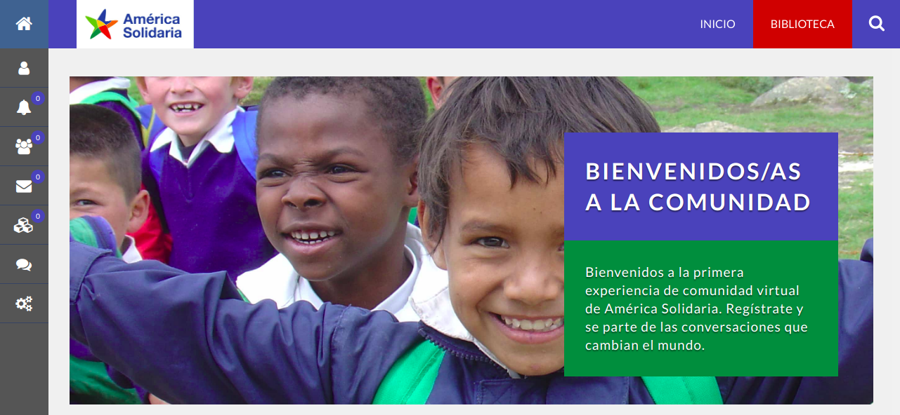

Desafío
Lograr reforzar la red de ex voluntarios en conexión con la fundación para la comunicación constante entre estas, y así generar lazos perdurables en el tiempo en donde ambas partes puedan apoyarse y comunicarse

Evaluación Heurística
Para comenzar nuestra investigación, fue de vital importancia realizar un análisis a la plataforma que se encuentra en estado beta y busca de alguna forma, solucionar en cierta medida los problemas de comunicación que esta red presenta. Los principales descubrimientos fueron los siguientes:
- No existen títulos ni breadcrumbs en las pantallas, por ende no se entiende bien donde se está posicionado
- El motor de búsqueda (buscador) existe pero no funciona
- En la página de inicio hay información que no es demasiado relevante, así mismo existe información que redunda, tanto en las pestañas como en los menu laterales
- Las tipografías y tamaño de letras son inconsistentes entre sí, así como el diseño visual
